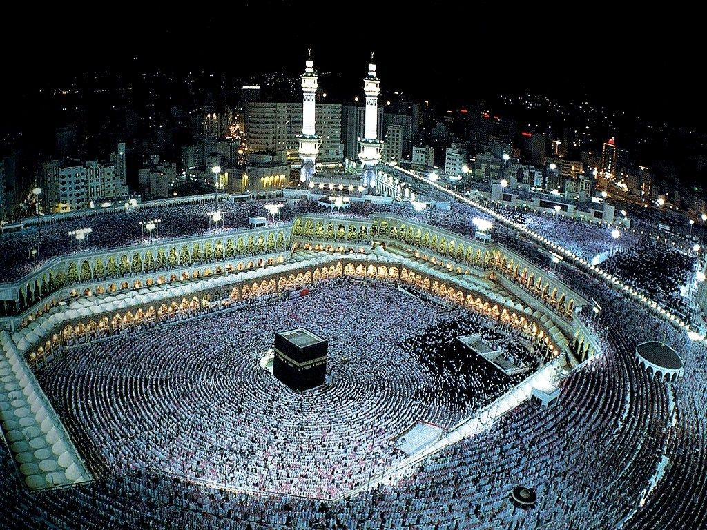

Eksempel 5
05.11.2020
Et Sted
For å lage microdata for et sted må vi bruke Place vokabularet fra schema.org
Kaaba
The Kaaba, also spelled Ka'bah or Kabah, sometimes referred to as al-Kaʿbah al-Musharrafah, is a building at the center of Islam's most important mosque, the Masjid al-Haram in Mecca, Saudi Arabia. It is the most sacred site in Islam.
Address: Al Haram, Mecca 24231, Saudi Arabia
A photo:
